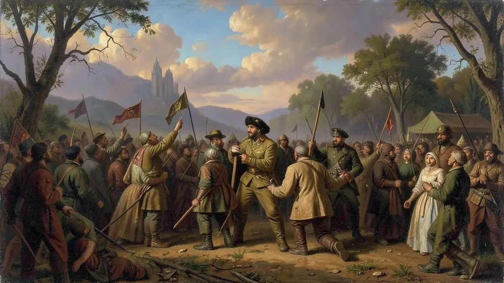

Capítulo 01
1. O Golpe de 1964 e os Atos Institucionais
O governo Jango era visto como radical pela elite e pelas Forças Armadas. O golpe teve o apoio da Marcha da Família com Deus pela Liberdade. Os primeiros AIs foram usados para cassar mandatos e punir opositores. O AI-2 acabou com o pluripartidarismo, criando apenas dois partidos: a ARENA (do governo) e o MDB (oposição controlada), uma democracia de fachada onde os generais indicavam seus sucessores.
Capítulo 02
2. AI-5 e as Resistências Armadas e Culturais
O AI-5 foi o golpe dentro do golpe. Após o discurso do deputado Márcio Moreira Alves, os militares radicalizaram. Estudantes, jornalistas e artistas (como Caetano e Gil) foram perseguidos. Grupos de esquerda optaram pela luta armada (guerrilha rural no Araguaia e urbana no Rio/SP), que foi esmagada pelo aparato repressivo do Estado, financiado inclusive por empresários civis (Operação Bandeirante).

Capítulo 03
3. O Milagre Econômico e a Transamazônica
Sob Médici, o Brasil viveu um delírio de crescimento. Obras faraônicas como a Rodovia Transamazônica e a Ponte Rio-Niterói simbolizavam o 'Brasil: Ame-o ou Deixe-o'. O slogan patriótico escondia que o país estava ficando refém da dívida externa e que o salário mínimo real estava despencando, enquanto a elite industrial lucrava com a proibição de greves.
Capítulo 04
4. Geisel, Figueiredo e a Abertura
Ernesto Geisel iniciou a abertura por necessidade: a economia estava em crise e a oposição crescia. Ele revogou o AI-5 e lidou com os militares da 'linha dura' que queriam explodir bombas para impedir a volta da democracia (como no Atentado do Riocentro). João Figueiredo, o último general, assinou a Anistia e permitiu o retorno do pluripartidarismo, tentando reformar o sistema para que os militares saíssem sem retaliações.
Instaurado por um golpe civil-militar articulado por facções conservadoras, empresariado robusto e referendado internacionalmente com a Doutrina de Segurança Nacional americana (Guerra Fria) o regime discricionário dos marechais no anoitecer de 1964 instauraria uma repressiva autocracia nacional asfixiando com recriminada impiedade os mandatos políticos e aos progressistas opositores defensores as perigosamente taxadas “Repúblicas Sindicalistas”
Ao encrustar constitucionalmente os ditames e decretações centralizadoras arbitrárias (imposição sumária brutal do dantesco Ato Institucional n° 5) e atrelando concomitantemente a farsa ufanista do falso “Milagre Econômico”. Embalados na falácia propagandeada desenvolvimentista (construções faraônicas sob lastro esmagador dos juros dolarizados de empréstimos e a atração neocolonial perversa da expansão concentradora transnacional aliada fortemente repressão cruenta sistemática macabra executada nos infames Doicodis.
Essencial nas provas em âmbito atual o domínio dos ditames geopolíticos e de cerceamento na memória traumática contemporânea. A ditadura legou a desigualdade das rendas, endividamento galopante extorsivo, aparelhamento generalizado institucional à hiperinflação estonteante e uma herança cicatricial perenal sangrenta e abafada das anistias brandas impostas que sufocam o clamor permanente e dolorosa dos calados nas masmorras subterrâneas das polícias discricionárias da dita 'Subversão'.
Fonte: SKIDMORE, Thomas E. Brasil: De Castelo a Tancredo (1964-1985). São Paulo: Paz e Terra, 1988.
Atividades interativas
Questões para fixar
O AI-5 (Ato Institucional nº 5), promulgado em dezembro de 1968, é considerado o auge da ditadura por que:
A política econômica do 'Milagre' baseava-se na seguinte frase do ministro Delfim Netto: 'É preciso fazer o bolo crescer para depois dividi-lo'. O resultado prático dessa política foi: